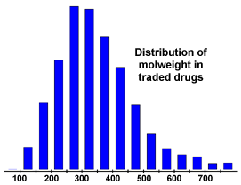
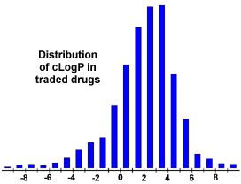
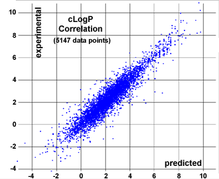
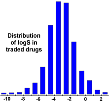
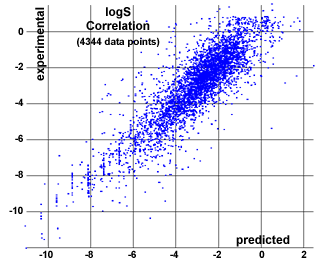
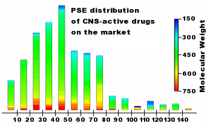
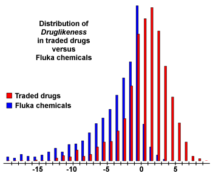
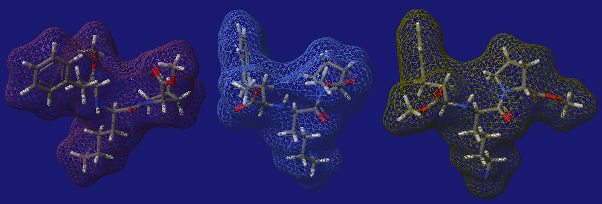

DataWarrior predicts various physico-chemical and other properties that help to evaluate whether a chemical compound may serve as a promising drug candidate not taking specific target information into account:
For comparing the inhibitory potential towards a specific target prioritizing compounds based on their activities alone inevitably creates a strong bias towards lipophilic and high molecular weight compounds. Activity values should rather be normalized considering the compounds molecular weights and/or lipophilicity. Normalized activity measures commonly used are:
|  | Optimizing compounds for high activity on a biological target almost often
goes along with increased molecular weights. However, compounds with higher
weights are less likely to be absorbed and therefore to ever reach the place
of action. Thus, trying to keep molecular weights as low as possible should
be the desire of every drug forger.
The diagram shows that more than 80 % of all traded drugs have a molecular weight below 450. |
|  | The logP similarity of a compound, which is the logarithm of its partition coefficient between n-octanol and water log(coctanol/cwater), is a well established measure of the compound's hydrophilicity. Low hydrophilicities and therefore high logP values cause poor absorption or permeation. It has been shown for compounds to have a reasonable probability of being well absorbt their logP similarity must not be greater than 5.0. The distribution of calculated logP values of more than 3000 drugs on the market underlines this fact (see diagram). |
| Our in-house logP calculation method is implemented as increment system adding contributions of every atom based on its atom type. Alltogether the cLogP predicting engine distinguishes 368 atom types which are composed of various properties of the atom itself (atomic no and ring membership) as its direct neighbours (bond type, aromaticity state and encoded atomic no). More than 5000 compounds with experimentally determined logP values were used as training set to optimize the 369 contribution values associated with the atom types. The correlation plot (see diagram) shows calculated versus experimentally determined logP values of an independent test set of more than 5000 compounds being different from the training set. |  |
In an independent comparison of commercial and open logP prediction algorithms Igor Tetko found that the Actelion cLogP calculation outperforms most other logP calculation methods. Tetko et al, Calculation of molecular lipophilicity: State-of-the-art and comparison of log P methods on more than 96,000 compounds J. Pharm. Sci. 2009, 98 (3), 861-93.
|  | The aquous solubility of a compound significantly affects its absorption
and distribution characteristics. Typically, a low solubility goes along
with a bad absorption and therefore the general aim is to avoid poorly
soluble compounds. Our estimated logS similarity is a unit stripped logarithm
(base 10) of the solubility measured in mol/liter.
In the left diagram you can see that more than 80% of the drugs on the market have a (estimated) logS similarity greater than -4. |
| Similar to our in-house logP calculation we assess the solubility via an increment system by adding atom contributions depending on their atom types. The atom types employed here differ slightly from the ones used for the cLogP estimation in that respect that the ring membership is not looked at. Still there are 271 distinguishable atom types describing the atom and its near surrounding. More than 2000 compounds with experimentally determined solubility values (25 degrees, pH=7.5) were used as training set to optimize the contribution values associated with the atom types. The correlation plot on the right shows calculated versus experimentally determined logS. You can see that the precision of the logS estimation is worse than the one for logP. This is because the solubility of a substance depends to a certain extend on how effectively the molecules are arranged in the crystall and these topological aspects cannot be predicted via atom types nor substructure fragments. |  |
| The polar surface area (PSA) is defined as the surface sum over all polar atoms, (oxygen, nitrogen, sulfur and phosphorus), including also attached hydrogens. PSA is a commonly used medicinal chemistry metric for the optimisation of cell permeability. Molecules with a polar surface area of greater than 140 square angstrom are usually believed to be poor at permeating cell membranes. For molecules to penetrate the blood-brain barrier (and thus acting on receptors in the central nervous system), PSA should be less than 60 square angstrom. |  |
The algorithm used is an increment system adding fragment-based contributions based on the paper by Peter Ertl et al. in J. Med. Chem. 43, 3714-3717 (2000).
The toxicity risk assessment tries to locate substructures within the chemical structure being indicative of a toxicity risk within one of four major toxicity classes. Risk alerts are by no means meant to be a fully reliable toxicity prediction. Nor should be concluded from the absence of risk alerts that a particular substance would be completely free of any toxic effect.
In order to assess the toxicity prediction's reliability we ran a set of toxic compounds and a set of presumably non-toxic compounds through the prediction. The diagram below shows the results obtained by predicting all available structures of four subsets of the RTECS database. E.g. all structures known to be mutagenic were run through the mutagenicity assessment. 86 % of these structures where found to bear a high or medium risk of being mutagenic. As a controlset served a collection of traded drugs of which the mutagenicity risk assessment revealed only 12 % of potentially harmful compounds.
The prediction process relies on a precomputed set of structural fragment that give rise to toxicity alerts in case they are encountered in the structure currently drawn. These fragment lists were created by rigorously shreddering all compounds of the RTECS database known to be active in a certain toxicity class (e.g. mutagenicity). During the shreddering any molecule was first cut at every rotatable bonds leading to a set of core fragments. These in turn were used to reconstruct all possible bigger fragments being a substructure of the original molecule. Afterwards, a substructure search process determined the occurence frequency of any fragment (core and constructed fragments) within all compounds of that toxicity class. It also determined these fragment's frequencies within the structures of more than 3000 traded drugs. Based on the assumption that traded drugs are largely free of toxic effects, any fragment was considered a risk factor if it occured often as substructure of harmful compounds but never or rarely in traded drugs.
There are many approaches around that assess a compound's druglikeness partially based on topological descriptors, fingerprints of MDL struture keys or other properties as cLogP and molecular weights. Our approach is based on a list of about 5300 distinct substructure fragments with associated druglikeness scores. The druglikeness is calculated with the following equation summing up score values of those fragments that are present in the molecule under investigation:
The fragmentlist was created by shreddering 3300 traded drugs as well as 15000 commercially available chemicals (Fluka) yielding a complete list of all available fragments. As a restriction the shredder considered only rotatable bonds as cuttable. In addition the substitution modes of all fragment atoms were retained, i.e. fragment atoms that hadn't been further subtituted in the original compounds were marked as such and atoms being part of a bond that was cut were marked as carrying a further substituent. This way fragment substitution patterns are included in the fragments.
The occurence frequency of every one of the fragments was determined within the collection of traded drugs and within the supposedly non-drug-like collection of Fluka compounds. All fragments with an overall frequency above a certain threshold were inverse clustered in order to remove highly redundant fragments. For the remaining fragments the druglikeness score was determined as the logarithm of the quotent of frequencies in traded drugs versus Fluka chemicals.
|  | The diagrams shows the distribution of druglikeness values calculated
from 15000 Fluka compounds and from 3300 traded drugs. It shows that about
80% of the drugs have a positive druglikeness similarity whereas the big majority
of Fluka chemicals accounts for the negative values.
Thus, try to keep your compounds in the positive range... |
A positive similarity states that your molecule contains predominatly fragments which are frequently present in commercial drugs. What it doesn't necessarily mean, though, is that these fragments are well ballanced concerning other properties. For instance, a molecule may be composed of drug-like, but lipophilic fragments only. This molecule will have a high druglikeness score although it wouldn't really qualify for being a drug because of its high lipophilicity.
The drug score combines druglikeness, cLogP, logS, molecular weight and toxicity risks in one handy similarity that may be used to judge the compound's overall potential to qualify for a drug. This similarity is calculated by multiplying contributions of each of the individual properties by the first of these equations:
ds is the drug score. si are contribution values calculated directly from cLogP, logS, molweight and druglikeness (pi) by the second equation. This equation describes a spline curve with contributions ranging from 0 to 1 depending on the respective property similarity. Inversion point and slope of the curve are determined by parameters a and b, which are (1, -5), (-1, -5), (0.012, -6) and (-1, 0) for cLogP, logS, molweight and druglikeness, respectively. ti are the four contributions reflecting the four types of toxicity risks. The ti values used are 1.0, 0.8 and 0.6 for no risk, medium risk and high risk , respectively.
The molecular flexibility of a ligand has a substancial influence on the affinity and specificity when binding to a protein. (e.g. The fundamental role of flexibility on the strength of molecular binding.C Forrey, J F Douglasb, M K Gilson; Soft Matter, 2012, 8, 6385-6392, DOI: 10.1039/C2SM25160D). DataWarrior can help studing these effects or aid in planning compound generations with a changed flexibility profile. For this DataWarrior may calculate the flexibility of a molecule using dihedral angle data from the Crystallography Open Database (COD). Molecular flexibility values range from 0.0 (rigid) to 1.0 (completely flexible).
Often the number of rotatable bonds is used as a surrogate for molecular flexibility. Unfortunately, this is a rather sub-optimal approach for two reasons: First, bond rotatability is not a binary property. While double bonds, amide bonds, and aromatic ring bonds are pretty rigid, 'rotatable' single bonds range from highly rotatable to rather rigid depending on their rotation energy barriers. Second, the topological position of a rotatable bonds has a strong influence on the flexibility of a molecule. DataWarrior's molecular flexibility value tries to circumvent these shortcomings.
These four steps are performed in the calculation:
The conformational flexibility of a molecule and with it the diversity of shapes the molecules can assume is mainly caused by dihedral angle changes of the molecule's bonds. Therefore, DataWarrior determines in a first step all rotatable bonds. These are single bonds, which are neither part of an aromatic nor of a 3-, 4- or 5-membered ring. Moreover, their both atoms must be sp2 or sp3 hybridized and they must carry at least one more non-hydrogen neighbor. For chains of conjugated triple bonds the following applies: If at least one terminal sp2/sp3 atom has no external neighbor, then no single bond is considered rotatable. Otherwise that terminal single bond connecting the smaller substituent is considered the only rotatable bond of the linear atom strand.
Dihedral angle changes of a bond in the center of a molecule have a much larger effect on the
overall molecule shape than the torsion change of an outer substituent bond. Therefore, an influence
factor is calculated for every rotatable bond that reflects the topological location. It also considers
the limited degree of freedom in case of a ring bond:
The flexibility of every individual rotatable bond is then determined from statistical torsion data of similar bonds taken from the COD. For instance the C-O bond in a C-O-C-C strain is considered much more flexible than the central bond in a C-C-C-C chain, which has a strong preference towards the anti-conformation. For every rotatable bond a characterizing substructure is generated from its local environment. This substructure consists of the two bond atoms, their direct neighbour atoms and the next shell of neighbour atoms. It includes all connecting bond orders and various properties, e.g. whether atoms are in a ring, are aromatic, the stereo configuration, etc. Then a canonical representation of the bond's characterizing substructure is built. The same mechanism was used earlier to characterize all rotatable bonds of all organic structures of the COD. Now using a bond's canonical key, DataWarrior can look up a torsion angle distribution curve of all equal substructures within the COD. The number of peaks, their heights and their widths are now used to generate the bond specific flexibility value. Angle frequency distributions with multiple wide maxima of similar heights cause flexibility values close to 1.0 while histograms with one narrow single peak are close to 0.0.
Finally, from the number of all molecule bonds, the number of rotatabale bonds, their specific flexibility values, and their geometry weighting factor an overall molecular flexibility value is calculated.
The globularity of a compound is a value that describes how well the molecule's three dimensional shape resembles a sphere, but there are multiple ways to calculate globularity values and globularity values taken from different tools using different methods don't necessarily correlate well. Nevertheless, globularity values play an important part in property in molecular property prediction. For instance, low molecular globularity seems to be a precondition for compounds to traverse the outer membrane of Gram-negative bacteria. (doi:10.1038/nature22308; M F Richter, B S Drown, A P Riley, A Garcia, T Shirai, R L Svec, P J Hergenrother; Predictive compound accumulation rules yield a broad-spectrum antibiotic; 545 (2017), 299).
DataWarrior uses three different methods to produce a value that somehow describes the molecular shape of a molecule:
Molecular Shape Index: This method works on the 2-dimensional non-hydrogen atom and bond graph of the molecule. It determines those two atoms with the highest topological distance. These are those two atom, whose shortest connecting chain is longer (or equal) than that of any other atom pair in the molecule. The the number of atoms in that chain id divided by the number of atoms in the molecule. Thus, values of 1.0 represent perfect chains and the smaller the value the more rings and bridges are in the molecule.
Globularity SVD: This method works on the 3-dimensional atom coordinates of multiple conformers of
the given molecule. If the selected structure column has attached 3-dimensional atom coordinates,
then these are used to calculate the value. If multiple columns exist, then the first is used.
If 3D-coordinates cannot be found, DataWarrior generates up to 16 non-minimized conformers on the fly
using random combinations of low-energy torsion angles.
For every conformer it starts with a singular value decomposition of all atoms in three
dimensions. From that it takes those three orthogonal axes in space, which have the largest, the second largest,
and the smallest variance of atom positions. Then the smallest rectangular box is determines that fits the
conformer and whose edges are parallel to the three axes. The globularity value is then calculated as ratio
from the smallest and the largest edge size of the box. This way values range from close to 1.0 for spherical
molecules to 0.0 for perfectly flat or linear molecules. The final globularity value is an average of those
calculated from the individual conformers.
Globularity Vol: This method also works on the 3-dimensional atom coordinates of multiple conformers. As with the previous method, these are generated on the fly if the dataset doesn't contain them. For every conformer DataWarrior generates a solvent excluded surface (Conolly surface) with Van-der-Waals radii using a probe of 1.4 Angstroms. From the surface it calculates its exact area A1 and the enclosed volume. Then the surface area A2 of a perfect sphere is calculated, which would match the molecule's volume exactly. The globularity value is then calculated as ratio from A2 and A1. Real life values calculated by this method range from close to 1.0 for spherical molecules to about 0.6 for linear molecules with irregular shapes. The final globularity value is an average of those calculated from the individual conformers.
Note that these three methods differ substancially in their results. The following three conformers of the same molecule illustrate why: The SVD based method considers the molecule being globular, while the surface based method assigns a rather low globularity. The conformer picture reveals the reason: While the molecule's sizes in all three dimensions are very similar, the molecular surface is much higher than that of a sphere with the same volume.

The ligand efficiency is a measure for the activity normalized by the number of non-H atoms. More precisely, it is the relative free binding energy in kcal/mol per non-H atom, calculated from an IC50 similarity. Especially in early project stages prioritizing compounds based on their ligand efficiency values is a much more favorable approach compared to judging from plain activities alone: "For the purposes of HTS follow-up, we recommend considering optimizing the hits or leads with the highest ligand efficiencies rather than the most potent..." (Ref.: A. L. Hopkins et al., Drug Disc. Today, 9 (2004), pp. 430-431).
To give an example: A compound with 30 atoms (400 MW) that binds with a Kd=10 nM has a ligand efficiency similarity of 0.36 kcal/mol per non-H atom. Another compound with 38 non-H atoms (500 MW) and the same ligand efficiency would have a 100 fold higher activity with Kd=0.106 nM. Let us assume an HTS screening revealed two hit compounds A and B with equal activities of IC50=10 nm, but different molecular weights of 400 and 500, respectively. Based on activities both compounds look equally attractive. Considering, however, that a synthetic introduction of a new group with 8 non-H atoms into compound A would match compound B in terms of weight, but would increase the activity by a factor of 100, if its ligand efficiency similarity can be maintained, it becomes clear that compound A is the by far more attractive alternative.
The LLE similarity is a builds on the fact that the typical compounds of drug discovery projects huddle at the lipophilic side of the acceptable lipophilicity range. A gain in lipophilicity therefore is associated with a loss in bioavailability and should be compensated by higher activity on the target. To express this relationship the LLE is calculated as LLE = -log IC50 - cLogP. A rough rule of thumb may be the suggestion of Jonathan S. Mason from Lundbeck Research to aim for LLE values above 3 for lead compounds and above 5 for clinical candidates.
Since the ligand efficiency doesn't take lipophilicity into account while the LLE neglects the molecular weight influence, Keseru and Makara suggest using the LELP similarity instead: "... So, we propose simply to use LELP = logP / ligand efficiency as a useful function to depict the price of ligand efficiency paid in logP. Medicinal chemists who are familiar with both logP and ligand efficiency can easily relate to the change in logP per ligand efficiency unit. As such, LELP is negative only when logP is negative, and the higher the absolute similarity of LELP the less drug-like the lead compound. The widely accepted lower limit of ligand efficiency has been 0.3, and the lipophilicity range for lead-like compounds is -3 < logP < 3. These values define the range -10 < LELP < 10 for acceptable leads, and LELP would have to be less than 16.5 for compounds that are in the Lipinski zone. For typical lead discovery projects, the closer LELP is to zero in the positive range, the better. In our experience a truly good hit or lead in the early optimization stage has a ligand efficiency > 0.40-0.45 and 0 < logP < 3. So, the desirable range for LELP is between 0 and 7.5. LELP becomes a useful function to follow during hit-to-lead optimizations, as for typical lead discovery projects LELP should be moving towards zero with improving potency." (Ref.: G. M. Keseru & G. M. Makara, The influence of lead discovery strategies on the properties of drug candidates, Nature Rev. Drug Discov. 3, 203-212 (2009))